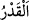
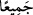
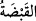
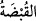
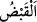
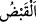
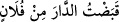
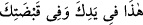

ve ağaçları bir parmağına ve bütün yarattıklarını bir parmağına koyacak. Sonra onları
sarsacak ve: “Gerçek hükümdar benim! Nerede o hükümdarlar!? diyecek.” Rasûlullah
(s.a.) bundan hoşlanarak ve anlatılanı tasdik ederek tebessüm etti. İşte bunun üzerine
Allah Teâlâ bu ayeti indirdi:
“Onlar Allah’ı hakkıyla tanıyıp bilemediler.”
“__WORD__ el-Kâmûs’ta belirtildiği üzere tâzim mânâsınadır. Buna göre mânâ ‘Allah’a
gerektiği şekilde tâzim edemediler, yüceltemediler. Çünkü O’na ortak koştular ve O’nun
yüce şânına lâyık olmayan şeylerle vasfettiler.’ demektir.
el-Muhtâr’da geçtiği üzere bu kelime takdir kökünden gelmektir. Buna göre mânâ
şöyledir: Allah Teâlâ’nın azametini, kendi nefislerinde hakkıyla takdir edemediler.
Râğıb ise el-Müfredât’ta şöyle der: “O’nun künhüne vâkıf/ârif olamadılar. Fakir
(Bursevî) der ki: Bu yorum yerinde değildir. Çünkü Allah Teâlâ kendi künhü îtibariyle
hakkıyla bilinemese de bu ma’rifet bizim bakımımızdan O’na taalluk eder. Şu halde
burada mânâ şöyledir: Onlar Allah’ı, O’nun cihetinden değil, kendi cihetlerine göre
tanıyamadılar. Çünkü kendileri itibariyle O’nu tanımış olsalardı, O’na ortak, çocuk, eş
ve benzerlerini izâfe etmezlerdi. Anla!
et-Te’vîlâtü’n-Necmiyye’de şöyle der: “Allah’ı hakkıyla tanıyamadılar, hakkıyla
vasfedemediler, hakkıyla ta’zim edip yüceltemediler. Kim Allah’ı başka bir varlığa
benzetirse (temsîl) ya da sıfatlarını hükümsüz kılarsa (ta’tîl) ümmetin gittiği anayolu
bırakmış ve en güzel yoldan sapmış olur. Çünkü O’na birtakım organ ve parçalar izâfe
ettikleri için O’nu gereği gibi değerlendiremediler.”
“Kıyamet günü bütün yeryüzü O’nun tasarrufundadır.”
“__WORD__ kelimesi, lafız olarak hal olmakla birlikte mânâ itibariyle te’kiddir. Bu
bakımdan tefsir âlimleri şöyle demişlerdir: Yeryüzünün “__WORD__ (bütün)” kelimesiyle
te’kid edilmesi, yeryüzü ile yedi kat yer kasdedildiği ya da yeryüzünün iç, dış ve
merkez tabakasının uzak-yakın, açık-gizli bütün bölgeleri kasdedildiği içindir.
“__WORD__ bir kez tutmaktır. Avuç ile tutulup kavranan miktar demek olan “__WORD__
mânâsında kullanılmıştır.
el-Müfredât’ta der ki: “__WORD__ tıpkı kılıç ve benzerlerinin elle kavranmasında olduğu
gibi bir şeyi tüm avucuyla tutmak demektir. “__WORD__ mecâzen avuç ile tutup kavrama
olmaksızın bir şeyi elde edip ona sâhip olmak anlamında da kullanılır. “__WORD__
Evi falancadan kabzettim, yâni elde ettim/aldım, sözünde olduğu gibi. Allah Teâlâ:
“Bütün yeryüzü O’nun avucundadır.” buyurur ki kimsenin mülkiyeti olmaksızın onun
kontrolündedir, demektir. Bir adama “__WORD__ (Bu senin elindedir ve
avcundadır.)” denildiği zaman bir şeyi eliyle tutup kavramasa da ‘O senin
mülkündedir/kontrolündedir’ demektir.
Mânâ şöyledir: Kıyamet günü bütün yeryüzü tasarrufta bulunma yetkisi iddiâ
edebilecek hiçbir varlık olmaksızın sadece O’nun mülk ve tasarrufundadır. Şu arzlar ne
kadar büyük olurlarsa olsunlar O’nun kudretine nisbetle tek bir avuçla tutulabilecek